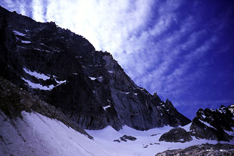
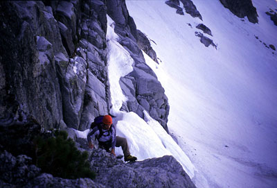
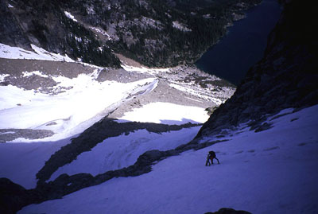
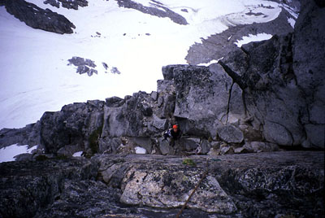
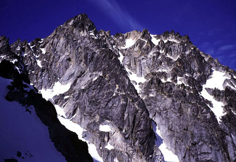
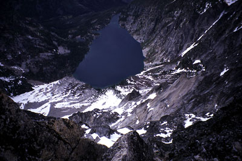
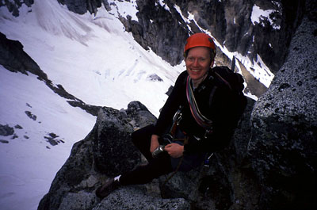

Dragontail Peak
- Serpentine Arete (5.8, III)







Theron Welch and I had a great time climbing Dragontail Peak last Saturday. Friday afternoon we eagerly read some trip reports online, and got our gear together for the drive to Leavenworth. We slept near the trailhead that night, because we knew Saturday would be a long day. Theron had read the weather report carefully, learning that bad weather was scheduled to come in Saturday night, so doing the climb as a day trip seemed like a better idea than hiking up to the lake and camping.
We woke to a clear sky, gathered our things and started hiking at 5:45 am. Hiking quietly beside the river, we enjoyed the familiar approach, coming to recognize all the turns and viewpoints of the path. The sky was blue, and I thought about the route ahead. We’d decided to climb the Serpentine Arete, a 2000 foot high rock climb that follows one of the backbones of the mountain up from the Colchuck Glacier. We brought plenty of rock climbing gear, as well as crampons and light ice axes. Theron forgot his headlamp, so we promised ourselves to make it back to the car before dark, or at least somewhere close.
At the lake a little boy was excited that we were climbing Dragontail Peak. His mom said he’d been waiting to see someone with that intention. “I’m too old [for] Dragontail!” he told us, somewhat nonsensically. At the same time, Theron had loaned me his MP3 player to listen to a 1950s radio drama called “X minus One.” The story was about people who had died, their brains preserved, and shrunk into the automaton bodies of “tiny, humanoid maniquins.” All for the purpose of advertising research of course. Later, high on the climb, we would often laugh recounting some of the great lines. “I think you should go” was one of the best, murmured by the protaganist as his secretary makes creepy flirtatious advances towards him.
We left our ski poles near the lake, and hiked up snow of the Colchuck Glacier moraine. Crampons were soon useful, and after a short eating break we made our way to steep snow below the route. We crossed a bergschrund, and continued up blocky ledges. Then we front-pointed with our crampons, using the pick of the axe in the ice for balance. After moving up and right for about 100 feet we reached rock bands that provided some break from the constant front-pointing (tiring on the calves). Much to my chagrin, my ice axe sling came untied and the axe slithered away!
Luckily it stopped a few feet below on a rock step. Without breathing, I climbed down and grasped it, pretty happy not to lose it on this icy slope. I attached a carabiner and sling, climbed up to a rocky ledge and waited for Theron. While our calf muscles came back to life we ate some leftover dinner from Medeterranian Kitchen last night - lamb, rice, tomatoes, onions and hummus!
We changed into rock shoes and Theron started up first. Trying to get around a rocky corner, he found himself crabbing up lichen-covered slabs leading to grim terrain. It’s the duty of a belayer to heckle in this situation, so I made the usual remarks about the lack of pro and flakes of lichen scraping off. Theron or the rock agreed, and they made a deal that careful moves left would get him around the corner safely. Soon I was paying out rope by the handful, as he continued up moderate gullies and corners to a broad ledge. Following, I especially remember a burly lieback move to gain the ledge, then a walk around a corner to more spectacular views. Thusly, one long pitch of rock above the snow got us to the crux pitch.
Now it was my turn to climb the 5.8 finger-crack and face above. After some hemming and hawing, I started up from a good fingerlock, then a shallow hand-jam. Making a wrong move, I decided to down-climb and place some pro before continuing. On the down-climb I slipped, caught by Theron on my first piece of gear. Whew! I got it right the next time, enjoying the tricky climbing and eventually traversing to a crack on the right. Proving that my ethics are very poor, I used a cam as a handhold because it blocked the best spot in the crack to get a secure hand jam. I decided it was more important to climb fast and secure than anything else. But now I have to live with myself! Oh the horror!!
Higher on this pitch, a spectacular corner crack led straight up and then to a step-across move and the base of an attractive dihedral. I belayed Theron up while enjoying the scenery which included a bevy of climbers trooping up the Colchuck Glacier below. Some of them would look up at us for long periods.
Theron led off, getting some good gear in the tricky dihedral, then exiting for a pleasant corner crack running right below a roof. After climbing this enjoyable pitch, we knew we’d finished the technical crux of the route. And then it started to snow.
This was kind of unnerving with 1200 feet of 4th and 5th class climbing to go!
So now we climbed more quickly, hoping to be up high before the snow started to stick to things and melt into an unpleasant sheen of slush and ice covering the holds. A not-too-difficult offwidth chimney led to a world of blocks and flakes climbing up the crest. Later 3rd class terrain was walkable for 30 feet to the base of a headwall. Pausing to put on rain jackets in the driving snow, we climbed the headwall carefully via friendly corners and flakes. Aside from worrying about the weather, this would be very pleasant terrain, certainly a little bit loose, but not terrible. We simul-climbed for long pitch after pitch, occasionally stopping to belay a hard section.
The driving snow seemed to isolate us in our own little world. As the clouds closed in around us we noticed the unnatural quiet that snowflakes bring with them. At other times the wind would blow, coaxing more snow from the sky. Coming to another headwall, I found myself before a long right-trending slab. Covered in wet black lichen, it looked dubious, but better than smooth walls straight above. I could see a piton in the middle of the slab. With a quickdraw at the ready, I crabbed out onto it, hands on a rounded lip at the top of the slab, feet looking for the least slippery steps. As often happens when you depend on one particular savior, the piton proved disappointing. It easily came out in my hand, and I wondered what strange scenario caused it to be there ( a winter climb with frozen mud?). Not liking my tenuous position, I moved quietly and precisely to the end of the slab so I could make many “whoops” of relief and say stuff to Theron like “Dang, your gonna like that one!” I definitely wanted to belay Theron on that part, so when continuing up brought me to a short, steep wall, I placed some gear and belayed. The snowfall reached maximum output while Theron was crossing the slab, then the clouds lifted suddenly with a cool, dry wind!
Already the wet rock was drying, and we were finding new things to smile about. The psychological mein for grim duty melted away, and we resurrected an invention from two weeks before: singing Ozzy Osbourne tunes with the voice of a 1940’s librarian (a heavy, out-of-fashion vibrato). Climbing 20 feet of steep ground, it seemed much easier on dry rock. Theron took over for the next series of simul-climbing pitches, leading me up more endless corners, past snow and into gullies. This part of the climb reminded me of long chimney and gully pitches on the Sassalungo two years ago. That climb also had the sense of going on forever and ever in moderate 5th class gullies and corners.
Theron thought about leaving the ridge crest, but stayed on it, climbing the right side of an especially steep headwall. (he was thankfully out of range of my timorous belay-seat patter about the dangers of leaving the crest). I shortened the rope again and began simul-climbing, now enjoying the views of tiny climbers glissading the snowy glacier below. Later we found out those climbers had heard our voices up on the cliff, but could never see us. I felt bad, remembering all the bad singing and lines from movies!
I led up for the final pitches, exhibiting exceptionally poor route-finding skills. First I went up and left, making boulder moves to get around a corner just to find scary black walls, but with a hint of easy ground above them. Then I came back a bit and tried to climb an overhanging lieback crack. “Who am I kidding?” I thought. I had to clean my gear and downclimb almost to Theron, who sent me off to the right. I managed to overlook an easy route in lieu of a steep chimney filled with icicles. Fascinated, I used a #3 Camelot to bash the icicles away, and put my hand deep in the fissure. One wall was smooth ice. With Theron keeping the rope tight, I jammed upward, got my foot up by my head, and shoved myself into a flaring chimney, pack and gear scraping forcefully. I had just gotten tired of looking for the easiest way, but I didn’t think it would be that hard!
Now Theron and I ate the last of our food and changed into boots for a short but steep snowfield below the final wall. We decided to escape to the left, rather than switch shoes again to climb a final 5.7 pitch. After eating the last of our food, I crunched up and around a corner on surprisingly deep, fresh snow on old snow. It felt so good to have boots on! Theron began climbing, and we soon rounded another corner to gain 3rd class terrain below the summit. Climbing another 50 meters up rock and snow, we stood to admire the Stuart Range, held captive by drifts of cloud. “I wonder if Carlos is over there?” I said, looking to Prusik Peak. He was going on his first backpacking trip to Lake Viviane - did the snow scare him off? Nope, he had an eventful night in the storm, tent shaking, snow piling up - the works!
But for Theron and I, it was time to make the journey home. Descending easy terrain, we reached a glissade path, jumping aboard immediately for a long, fun slide. We walked to Aasgard Pass, then descended with a combination of walking, boot-glissading, and sitting glissades. It was kind of tricky, because the snow was curiously hard, tempting us to put on crampons. I lost control several times while glissading, which provided opportunity to practice self-arrest. Since I knew I could stop myself, I just continued down with aplomb, content with my icy lot. Theron had no truck with this approach, so I waited for him in boulders by the lake. Unfortunately I’d let some moisture get near the video camera, and it complained “DEW DETECTED,” disobeying my order to film Colchuck Lake. We were really asking a lot of a camcorder! It turned out to be fine.
It took a while getting around the lake, and I was relieved to begin heading downhill. We zoomed along, passing a few parties (one guy said “I want to get into climbing, specifically loose, slabby, moss-covered terrain.” I wondered how he had dialed in so well the kind of ground I try to avoid?). Theron listened to his MP3 player, I communed with the forest. We stopped for water at the bridge, actually laying spread-eagled on a slab in the light rain. It felt so good to lie down though! The onset of shivering and impending approach of the would-be climber (“Are you undertaking extreme risk-taking behavior up there?”) convinced us to go.
Now the long miles to the car, the same story of hurting feet, wet underwear (I’ve gotta quit wearing cotton), sore legs and heavy pack. This is nothing new, just the price to pay for a day above the glaciers, moving carefully in sun and snow on the sheer faces.
We reached the car at 8:45 pm, happily avoiding the need for a headlamp Theron didn’t have, just in time to worry about Leavenworth closing down at 9 pm. Luckily it was Saturday, so we got to have a huge Italian food meal before hitting the road. I could just see the waiter rolling his eyes at another hobbling dirty pair, painfully eager to tell their story of steep and snow, if only…someone would ask!
Theron as always, was a perfect partner, ready with advice or a funny character impression to see you safely above. Thanks buddy!
Detailed Notes
We left the car at 5:45 am.
Steep hard snow to get to the climbing, all frontpointing. For Theron, the most nerve-wracking part, tense for me too. There was a big cliff below us. I nearly lost my ice axe when the wrist loop sling came untied. It fell and luckily caught on a rock 10 feet below.
Our pitch 1 was the pitch that led to the first 5.8 pitch.
-
Pitch 1: 10:30 am. Theron tried to get into a blocky gully from our snow-covered ledge, but couldn’t figure out a good way to do it. He placed some gear and continued up mossy steep featureless rock, hoping to traverse left into the gully higher up. It looked like 5.9 at least to me! His body started to slither down, and he decided to give up on that way. We wondered what to do. Another look around the corner to the left was more fruitful, and provided good climbing despite a few steps on snow with rock shoes. Theron led a full 60 meters up a long gully then flakes, with a hard lieback move near the end. Then he walked along a ledge to a gnarled dead tree around the corner. This pitch took one hour, which kind of scared us. But it did cover a lot of ground and that transition from snow climbing to rock climbing is often problematic.
-
Pitch 2: 11:30 am. I had a choice of 5.9 climbing in a corner or a 5.8 face with shallow cracks. I decided on the face because the corner had vegetation, and what might be a hard exit from an overhang (might be bomber jams though, a great way to escape!). The first moves on the face were hard. Standing on the left, I got a good fingerlock with my right hand, and feet on small ledges. I had placed a small cam just below. Standing up I could reach a good hand jam. Getting my feet high (one jammed in the crack, the other smearing), I reached for another good jam but I had messed up, because the crack flared, providing a good hold only with my right hand (still jammed in the crack at my hips). I decided to downclimb, get in sequence and try again. Also, I should put gear in the hands section because it was a little dicey above that. While downclimbing, I couldn’t find a good foothold (it was under a lip), and started to fall. “Falling!” I yelled, as I slithered down. I fell away from the rock and onto my small cam. Whew!
I tried again, this time adding some pro, and getting the moves right as the crack flared. Higher, I had a dilemma because I placed a cam in the most secure handhold location. I grabbed the carabiner on the cam as a handhold, not concerned with free climbing as precious minutes were ticking by. Some more interesting moves brought me to a steller corner crack that I couldn’t pass up. Excellent jams and smearing for feet took me up 30 feet to the exit. As a reward there were chicken-heads for my feet there. I crossed a slab on the left, and belayed below an open book. I think I got a picture of Theron climbing the corner crack, which he described as fist jamming. My hands were all scraped up from this pitch!
-
Pitch 3: Theron now led up the open book, encouraged to place gear early by my barely adequate gear belay. Despite slipping feet in the corner, he climbed out of the book, and on to an enjoyable dihedral leading right under a roof. This was an enjoyable pitch, 5.7 or maybe 5.8 in the open book. I remember asking “did you feel a drop of rain?”
-
Pitch 4: At the belay it started to snow. Small, dry graupel flakes. We tried to do several things at once, and almost lost Theron’s lunch container. I was eager to reach easy ground before the snow accumulated, so headed up what was actually a really nice pitch. A chimney with an overhanging chockstone provided the opening difficulties, then I entered a sheltered rock garden, making a step across move to the left. The snow was piling up on ledges, but not melted yet, so I still had some friction for smearing feet on walls. After climbing a blocky gully, I continued up loose rock to a final interesting climbing problem (the details of which escape me now!), and a ledge.
-
Pitch 5: We were eager to begin simul-climbing, especially as the weather might get much worse. If we could eat up easy terrain we would have time to go into “ultra-slow-and-safe” mode near the top if conditions required it, and still have time to escape by day’s end. We coiled some rope around our chests, and began climbing mixed 3rd and 4th class terrain. Theron wisely suggested putting on rain jackets, so after about 50 meters we joined up to do this, somberly putting away the video camera as we prepared for suffering up icy cracks and faces!
-
Pitch 6: I’d only placed a piece or two, so I continued in the lead. A wall reared above us, and we climbed gullies with solid flakes to reach the heart of it. In the driving snow I came to a slab leading right, with all the other options being featureless or overhanging. I think Theron belayed me on this part or at least kept slack out of the rope. I saw a piton 15 feet away in the middle of the slab, so got a quickdraw ready to clip it. The reason for my apprehension was that now the rock was wet. And this rock was covered in black lichen, which is icy slick once soaked. Put all that at an angle, with a few shallow handholds, and it can provide the scariest terrain of a trip! For me, this was. What’s worse, I reached the piton, and found it so loose I could remove it with my fingers! Suspiciously, I put it back (I don’t know why). It appeared to be pounded into dirt. Protection opportunities looked poor (hence the bad piton I suppose), so I carefully continued on the icy tilted “dance floor.” Breathing a sigh of relief, I moved back left, climbing short steep steps and walking ledges. By now, the rock faces in the distance had noticable snowy outlines on all non-vertical surfaces. I protected a short walk across another “dance floor” with a cam high and a four-foot sling to prevent rope drag. Once across I tried to climb a steep corner, but quailed at the difficulty, realizing I needed a belay and some human proximity. The driving snow seems to increase the distance between rope-mates, and a good belay at the base of the corner would get me moving. I’d promised to belay Theron as he crossed the slab, and this was a good point. He reports that the snow was really driving down as he crossed. Happily, it started to let up as he finished the pitch. Tiny figures were walking on the Colchuck Glacier below.
-
Pitch 7: As Theron belayed me, I started up the corner, liebacking more confidently on rock that was already beginning to dry in the wind. Before, I thought I’d have to aid the section, but with just a little more friction, the secrets were unlocked. I continued up terrain of stacked loose blocks and sand, trying to find a place to belay Theron. Next to a finger of snow below a steep wall, I reeled in the rope as he climbed. Now we could see distant mountains again, but dark clouds continued our way as if to say “we’ll be back.”
-
Pitch 8: Theron climbed a short gully then continued on a ledge leading around right. I was suddenly fearful of leaving the crest, and recognized the wall above from one of Dave Burdick’s photos. Theron knocked off some loose blocks around the corner, and I scrambled up, coiling rope around me to get voice contact with Theron. As it turned out, he’d abandoned the idea to leave the crest, and was climbing the wall starting from an easier point. We knew that easier terrain lay to the right of the ridge. But during the snowstorm I’d been looking over there, only to see dripping gray slabs in the murk, at their worst in fresh wet snow. Theron continued up pretty friendly terrain: nice 5.0 corners with solid flakes for holds. We were really thankful the snow had stopped!
Theron states there was an occasional short crux of maybe 5.4-5.6. He followed ramps with a zig-zag shape, and after some bad rope drag he belayed me up to his stance.
-
Pitch 9: Theron led up more easy terrain and eventually got back onto the crest. He could see a distinct notch in front of himself with a loose-looking gully to the right and more difficult, snow-covered ground on the left. He climbed up and over the high point before the notch only to see that it was too difficult to descend on either side, or straight over the crest. So, he removed his sling around a solid flake and climbed back down to the low point, set the sling on a lower flake, and downclimbed to the right. The ground was loose at the bottom but easy to avoid. Easy moves led back to the ridge crest which had flattened out into a face again. He continued up maybe 100 more feet, placing slings on flakes for protection then hip-belayed me up.
-
Pitch 10: I was getting really tired, and overburdened due to extra rope I’d coiled around myself on the previous pitch. I went up and left, making a hard move around a corner only to see a hint of easier ground above, passage sadly blocked by black overhanging slabs. I looked elsewhere for a good way (at one point entertaining an overhanging hand crack), but finally had to downclimb almost to the belay. It was pretty hard to downclimb this easy terrain because of all the things hanging from me, blocking the view of my feet! Theron suggested looking around to the right, so I went over and saw what looked like a steep but reasonable exit to lower-angle terrain. It turned out to be a slightly overhanging crack and chimney, filled with icicles! But I was tired of hunting around for the best way up, so I bashed the icicles away and felt around for holds inside. I placed a camming device, asked Theron to keep the rope tight and started up. It was odd, because one wall of the crack was smooth ice. I could still jam my hand in, but I knew it would go numb pretty soon. Thrutching gracelessly, I managed to get a foot up by my head and by scraping my back against a wall, move up into a slot that led after more thrutching to easier terrain. Climbing past more loose blocks, I set a belay below snow slopes and the final headwall. Theron came up, chiding me for missing a third class gully around the corner. Shucks!
-
Pitch 11: We had to change into boots for snow slopes, and didn’t want to change back into rock shoes for the final 5.7 headwall, so this was just a steep snow traverse to the left and easier ground. Then snow and rock slopes led us to the summit at 5:30 pm, for 7 hours on the climb.
We reached the car at 8:45 pm, so 15 hours round trip.